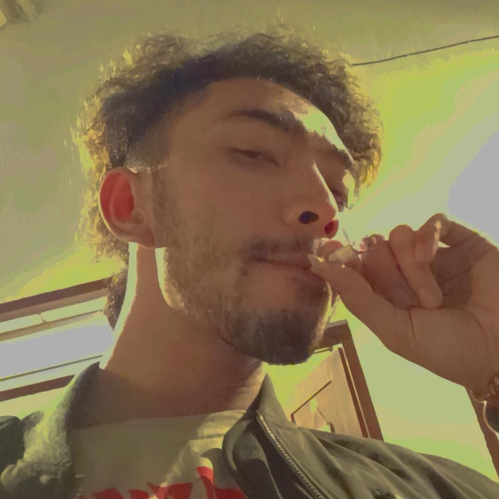

“The supreme prayer of my heart is not to be learned, rich, famous, powerful, or "good," but simply to be radiant. I desire to radiate health, cheerfulness, calm courage and good will. I wish to live without hate, whim, jealousy, envy, fear. I wish to be simple, honest, frank, natural, clean in mind and clean in body, unaffected—ready to say "I do not know," if it be so, and to meet all men on an absolute equality to face any obstacle and meet every difficulty unabashed and unafraid.” 'A Prayer' - Elbert Hubbard
Life is just once.. We will never truly get what we deserve.. if we are to attached to the things we are supposed to let go of. there is never a better time to start pursuing work in a field your passionate about.. If there's no passion, We'd better stop it :)
Have a great day! - Mariska Aelke
 Kadang nulis, kadang mendaki, kadang tersungkur, tapi tetap tersenyum. Karena ada yang tulus dalam sungkur.
Hallo.. saya Faizal Syahrullah, tapi saya lebih sering menggunakan nama Faiz atau Muhammad Faiz. Akhir-akhir ini saya sering mengikuti tentang perkembangan dunia coding dan kepenulisan guna menunjang niat saya dalam switch career ke dunia IT.
Saya aktif blogging dan github. Dan demi menambah skill dan pengetahuan saya, saya mengikuti short bootcamp di sinau coding dan HACKTOBERFEST 22 yang akan diadakan oleh komunitas Google Developer Student Clubs.